、
、 和
和  之外，还有其他域吗？当然有。我将给出两类常见的域，然后把它们放到一起，引出伽罗瓦理论和群论，最后我会补充介绍第三类重要的域。
之外，还有其他域吗？当然有。我将给出两类常见的域，然后把它们放到一起，引出伽罗瓦理论和群论，最后我会补充介绍第三类重要的域。域 和群 是人们在 19 世纪初的一系列研究中发现的两个数学对象的名称。
从内部结构来看，域比群更复杂。因此，代数教材通常先介绍群，再介绍域。尽管从某种意义上讲，域比群更常见，因而也更容易理解。群因为更简单，从而有着更广泛的适用性，所以总体而言，对纯粹代数学家来说，群论比域论更具挑战性 1 。
1 这并不是说域论中没有更深刻、更困难的结果，只是它们不像群论问题那样更容易直接应用代数方法解决，域论问题通常是用代数几何方法解决的。不过，术语“域论”（或“场论”，在英文中都是“fields theory”）在数学中有两种完全不同的含义。它在这里的含义是对被称为“域”的代数对象的研究。其另一种含义是对某些空间的研究，这些空间中的每一点都定义了某些量，例如标量或向量，有时候甚至是更奇怪的量。如果我说“电磁场理论”，你就会明白我的意思了。
基于这些原因，同时也为了使伽罗瓦的发现更容易被理解，在详细介绍群论之前，我在这里介绍一下域。
※※※
域是一个可以在其中随意进行加、减、乘、除的数（或者其他东西，但我们在这里说的是数）系。无论你做多少次四则运算，结果总是同一个域里的数。这就是为什么我说域很常见。在域中，我们所做的就是四则运算：加、减、乘、除。如果给“域”这个代数概念一个形象的比喻，那么我们可以把它比作一个有“+”“-”“×”“÷”四个操作键的简易计算器。
在域中，你需要遵守几个常见的法则。我已经介绍过封闭性法则：算术运算的结果仍在域里。你还需要一个“0”，其他数在与它相加时保持不变；另外，你还需要一个“1”，在其他数与它相乘时保持不变。你还必须遵守基本的代数法则，比如
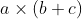
总是等于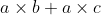
。加法和乘法都必须是可交换的，我们在域中不会遇到不可交换性。因此，哈密顿的四元数代数不是一个域，只是一个“可除代数”。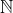
和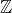
都不是域，因为两个整数相除未必会得到一个整数。然而有理数集合
是一个域：因为在其中，你可以做任意次加、减、乘、除运算，结果总在
中，所以它是一个域。可以说，
是最重要、最基本
的域。实数集
也构成一个域，复数集
也是一个域，应用我在本书一开始给出的复数的加、减、乘、除四则运算法则就可以验证这一点。因此，我们已经知道了三个有助于理解的域的例子，它们是
、
和
。
除了
、
和
之外，还有其他域吗？当然有。我将给出两类常见的域，然后把它们放到一起，引出伽罗瓦理论和群论，最后我会补充介绍第三类重要的域。
※※※
除了熟悉的
、
和
之外，第一类域是有限域
。
、
和
都包含无穷多个元素：它们分别包含无穷多个有理数、无穷多个实数和无穷多个复数。
下面是一个只包含三个元素的域，为了方便起见，我分别称这三个元素为 0、1 和 2，当然，如果你觉得这些记号容易与普通数字混淆，那么你可以用其他记号代替这里的 0、1 和 2。比如，用
代替 0，用  代替 1，用
代替 1，用
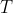
代替 2。例如，这个域中不会出现 2+2=4，却会出现 2×2=1。图 FT-1 中是这个有限域的完整的加法表和乘法表，这个域的名字是 。
。
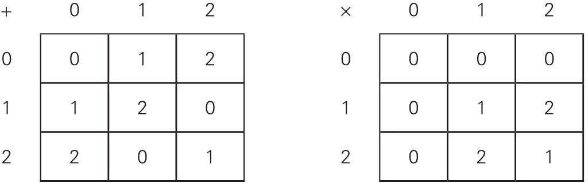
图 FT-1 域 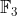
注意这个域的某些特点。首先，因为 1 的加法逆元是 2，2 的加法逆元是 1，所以对于减法来说，“减 1”总可以用“加 2”代替，反之亦然 2 。对于除法也一样，因为 2 的乘法逆元是 2（即 2×2=1），所以“除以 2”总可以用“乘以 2”代替，二者的结果是相同的。除以 1 的情况是显而易见的，而且域里的除法运算不允许除以 0。
2 事实上，一些教材的作者喜欢把这个域中的元素写成 0、1 和 -1，而不是 0、1 和 2，迈克尔·阿廷就是这样做的。如此一来，这个域的算术看起来就不那么奇怪 了：1+2=0 变成 1+(-1)=0。不过还是会出现 (-1)+(-1)=1 这种令人困惑的式子。
对于每一个大于 1 的自然数，都存在一个有限域，使得其中的元素个数是这个自然数吗？不，有限域中的元素个数只能为素数或素数的幂。存在包含 2 个、4 个、8 个、16 个、32 个……元素的有限域，也存在包含 3 个、9 个、27 个、81 个、243 个……元素的有限域，以此类推。然而，不存在包含 6 个或 15 个元素的有限域。
有限域通常被称为伽罗瓦域，以纪念法国数学家伽罗瓦，我们在后文中会谈到他。
※※※
第二类域是扩张域
。取一个我们熟悉的域，比如最常见的
，向其中添加一个元素。当然，这个添加的元素来自这个域之外。
例如，假设我们向
中添加
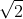
，因为 不在
中，所以它就是我所说的“添加的元素”。如果现在我在这个扩大后的数集中做加、减、乘、除运算，那么我会得到形如 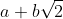
的数，其中 和
和  是有理数。这种形式的两个数的和、差、积和商仍然具有这种形式。事实上，这些数的加、减、乘、除运算法则很像复数的相应运算法则。例如，下面是这个域的除法运算法则：
是有理数。这种形式的两个数的和、差、积和商仍然具有这种形式。事实上，这些数的加、减、乘、除运算法则很像复数的相应运算法则。例如，下面是这个域的除法运算法则：
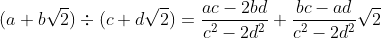
这是一个域。通过向有理数域
仅添加一个无理数
，我就得到了一个扩张域，它是一个新域。
注意，这个新域不是实数域
。下列实数就不在
其中：
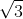
、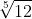
、π 以及其他无穷多个数。这个域中的数只有所有有理数、 以及所有由有理数与 通过四则运算组合而成的数。为什么要花费如此大的精力将
扩张这么一点点呢？其原因就是解方程。当毕达哥拉斯发现方程
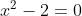
在
中没有解时，他万分惊恐。但是，在这个略微大一点儿的新域中，方程确实
有解 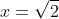
和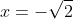
了。将域适当地扩张，就能够求解之前不能求解的方程。注意一个有趣且重要的事实：这个扩张域是原始域
上的向量空间。例如，数字 1 和
就是其中两个线性无关的向量。事实上，它们可以作为这个向量空间的一组很好的基（见“数学基础知识：向量空间和代数”）。每一个其他向量，即形如
的数（其中
和
是有理数）都可以用它们来表示。因此，作为
上的向量空间，这个扩张域是二维的。
向
添加一个无理数后得到的域并不总是二维的。例如，如果添加的无理数是
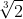
，那么这个扩张域就是三维的，1、 和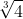
可以作为它的一组合适的基。看看这个域的除法运算法则，它展示了事情失控得有多快：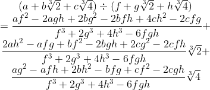
※※※
现在我要把本章前面的内容结合起来，并在 0、1、2 组成的域中求解二次方程。你会看到，有限域的优势在于，你可以写出所有可能 出现的二次方程！
我先讲重要的事。首先，下面是 0、1、2 组成的域上所有可能的线性 方程以及它们的解，你可以对照前面的“加法表”和“乘法表”检查这些解。
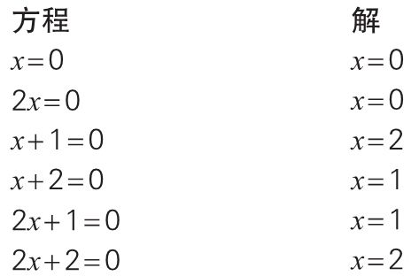
事实上，我列出的方程太多了。前两个方程没什么意思，
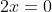
的解显然是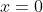
。最后两个方程也比较显然，这两个方程的左边分别可以写成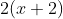
和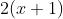
（别忘了，在这个域中，2×2 = 1），所以它们实际上分别就是稍加变形的第三个和第四个方程。因此我们只对第三个和第四个方程感兴趣。接下来是二次方程。这次我从一开始就不考虑那些没什么意思的方程。下面是我们感兴趣的所有系数在
中的二次方程。另外，我对它们的左边进行了因式分解。
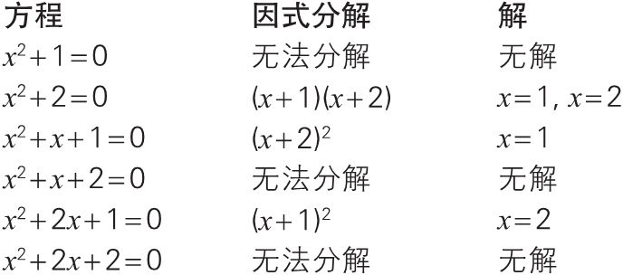
在这个域中，没有解的方程被称为不可约 的（可与“数学基础知识：三次方程和四次方程”中的第 3 个注释比较）。可以看到，在令我们感兴趣的这 6 个方程（系数在由 0、1、2 组成的域中）中，有三个方程是不可约的。
回顾一下我在前面都做了什么。我在小范围内重建了“标准”二次方程的情况，不同的是，我在这里不用考虑无限多个二次方程，这个域上只有 6 个令我们感兴趣的二次方程：其中三个方程有解，三个方程不可约。在普通算术中，方程
在
中没有解，因为
不是有理数。类似地，方程
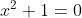
在
中没有解，甚至在
中也没有解，因为 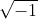
既不在
中，也不在
中。
※※※
我们能否扩张由 0、1、2 组成的域，使那些不可约方程有解呢？当然可以。我们可以发明一个新数，并称之为
，它满足第一个方程：
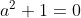
。在这个方程的两边同时加 2，我们就得到了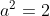
。（你可以称
是 2 的一个平方根。因为这个“2”与通常的“2”的性质不同，所以我没把
写成
，仍将它写成
。）现在，所有的方程都有解：
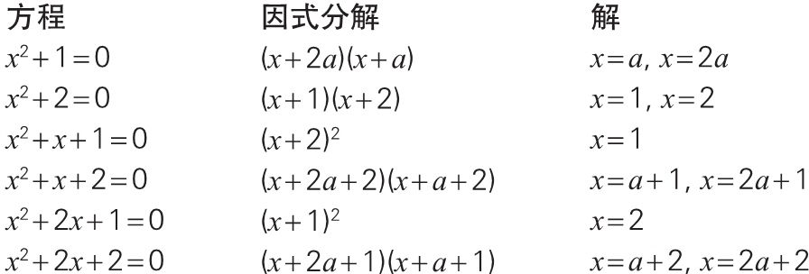
我们只需要向这个域添加一个元素
，就可以求解所有的二次方程。这个扩张的有限域（通常记为
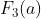
）中的加法、减法、乘法和除法仅仅涉及
的线性表达式。因为
，所以，如果乘法的结果是  ，那么我们就可以立即用 2 代替它。图 FT-2 是这个扩张域的乘法表。（加法表没那么令人激动，不过如果你想看一看，那么你可以尝试着自己构造一个加法表。）
，那么我们就可以立即用 2 代替它。图 FT-2 是这个扩张域的乘法表。（加法表没那么令人激动，不过如果你想看一看，那么你可以尝试着自己构造一个加法表。）
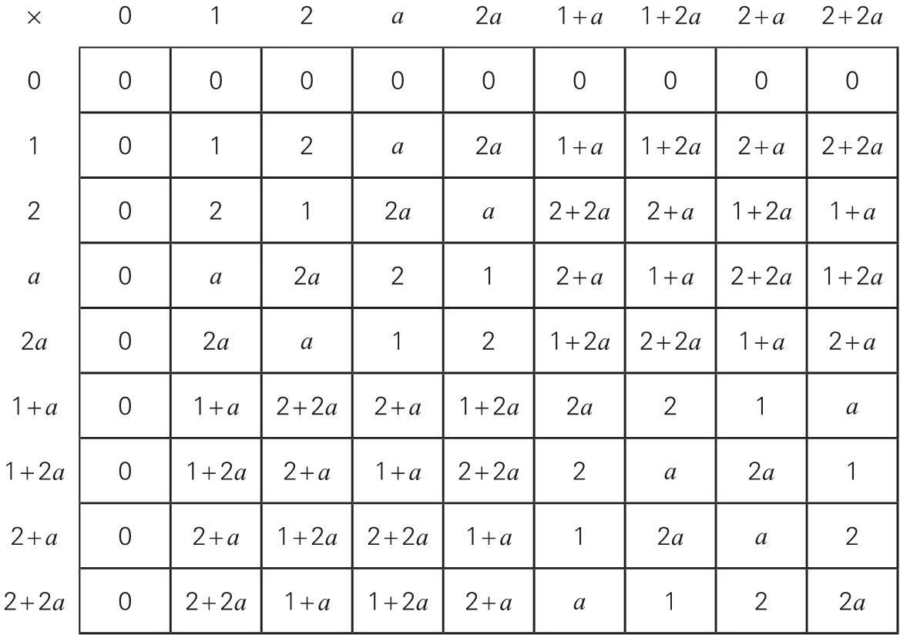
图 FT-2 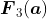
※※※
在这里，我们看到了伽罗瓦理论的一些精髓。存在一个方程，它的系数属于某个域，但是它在这个域中没有解。为了包含它的那些解，我们把系数域扩张为一个更大的域，并称之为解域。伽罗瓦关心的是，方程的解的形式取决于系数域和解域的关系 。
这就是伽罗瓦高明的洞察力。1830 年，他发现这种关系可以用群论的语言（置换）来表达。
伽罗瓦发现，对于任意给定的方程，我们需要考虑其解域的某些置换
。像上文中
这样的解域一般都比系数域大（这个例子的系数域是
）。现在，在解域的所有有用的置换中，存在某些置换组成的子集，其中的置换保持系数域不变
。该子集构成一个群，我们称它为该方程的伽罗瓦群。所有关于方程可解性的问题都可以转化为这个群的结构问题。
对于我在前文中给出的系数取自域
的方程
来说，它的伽罗瓦群非常简单，只有两个元素，其中一个元素是恒等置换
，也就是什么都不变；另一个元素是交换两个解的置换，把
换成
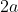
，把 换成
，我们把这个置换记为 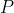
，它作用于整个 。我们使用箭头表示“置换为”，那么这个置换作用在元素上可以表示为：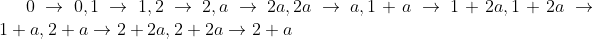
。图 FT-3 是系数域
上的方程
的伽罗瓦群的乘法表，这里的乘法代表置换的合成，即先进行第一个置换，再进行另一个置换。**
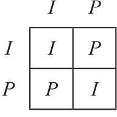
图 FT-3 方程 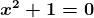
※※※
当然，上面只是对伽罗瓦理论的极其粗略的概述。3
对置换像
或
这些域中的元素来说，这一切都很好，这两个域分别只有 3 个元素和 9 个元素。在过去的几个世纪中，困扰代数学家的问题是求解系数在
中的方程，
是一个包含无穷多
个元素的域。怎样置换其中的元素呢？
3
事实上，这个概述也是事后做了很大改进的版本，算是现代版。伽罗瓦在 1830 年的原始论文中没有使用“域”这个词，爱德华教授的著作《伽罗瓦理论》中将这篇论文收为附录。直到 1879 年，“域”这个词才有了代数意义，当时是理查德·戴德金第一次使用了这个词。顺便提一下，我的例子表明把某个不可约二次方程的解添加到
上可以构造出
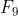
。这是一个一般定理的特殊情况：如果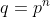
，我们可以把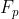
上的某个 次不可约方程的某个解添加到
上而构造出
次不可约方程的某个解添加到
上而构造出 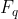
。我希望随着介绍的深入，我能把这个问题讲得更清楚一些。不过，我怀疑自己能否把事情讲得非常清楚 。伽罗瓦理论是既困难又精妙的高等代数分支，非数学专业人士不太容易理解。如果你能记住以下事实，那么你就掌握了伽罗瓦理论的本质：系数属于某个域的多项式可能在一个更大的域中有根，这个更大的域和这个较小的域的关系可以用群论语言来表达，从而每一个与求解多项式方程有关的问题都可以转化成一个群论问题。
※※※
在本章结束之前，我还要介绍另一类域，同时要向读者道歉。在讨论 18 世纪代数学家的工作时，为了简单起见，我不加区分地使用了“多项式”一词，但其中的一些式子实际上并不是“多项式”，而是“有理函数”。
有理函数是像下面这样的两个多项式的比：
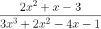
通过一些简单的计算，我们可以知道，任意两个这样的有理函数都可以进行加、减、乘、除运算，因此它们构成一个域。
注意，一个有理函数域“取决于”另一个域，这个域就是多项式的系数所在的域。事实上，一个有理函数域可以如上所述被看作域扩张。无论系数域是什么，从它开始，添加  之后并允许加法、减法、乘法和除法都成立，这就生成了有理函数域。这个域与之前讲的域扩张的例子的唯一区别在于，在那些例子中，我对添加的数更了解，知道它的平方或者立方是 2，这样一来，我就能在做域算术时做很多化简，在这里，我对
一无所知，它只是一个符号，如果你愿意，你也可以说它是一个未知量。
之后并允许加法、减法、乘法和除法都成立，这就生成了有理函数域。这个域与之前讲的域扩张的例子的唯一区别在于，在那些例子中，我对添加的数更了解，知道它的平方或者立方是 2，这样一来，我就能在做域算术时做很多化简，在这里，我对
一无所知，它只是一个符号，如果你愿意，你也可以说它是一个未知量。